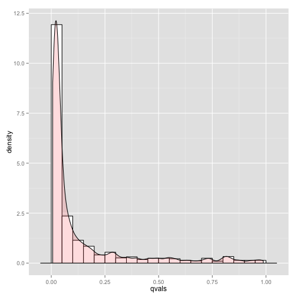

Tutorial population study¶
This example shows how to run a basic linear regression study across a population of image measurements.
First, load libraries.
library(knitr)
library(ANTsR)
Next declare dimensionality and get your pre-processed data.
mydim <- 2
#' define prefix for output files
outpre <- "TEST"
#' get the images
glb <- glob2rx(paste("phantom*bian.nii.gz", sep = ""))
fnl <- list.files(path = "../../", pattern = glb, full.names = T, recursive = T)
maskfn <- "phantomtemplate.jpg"
#' get the mask , should be in same space as image
glb <- glob2rx(paste(maskfn, sep = ""))
maskfn <- list.files(path = "../../", pattern = glb, full.names = T, recursive = T)
mask <- antsImageRead(maskfn[1], mydim)
#' get regions of mask according to logical comparisons
mask <- getMask(mask, 120, 130)
logmask <- mask > 0
notlogmask <- (!logmask)
# fill holes
ImageMath("2", mask, "FillHoles", mask)
Take a quick look at the input template and mask.
# image(as.array(antsImageRead(maskfn, mydim))) # alternative approach
plotANTsImage(myantsimage = antsImageRead(maskfn, mydim))
plotANTsImage(myantsimage = mask)
Now collect the results in a matrix and do the statistics.
We also write out a few results using antsImageWrite.
#' count voxels and create matrix to hold image data
nvox <- sum(c(logmask))
mat <- matrix(length(fnl) * nvox, nrow = length(fnl), ncol = nvox)
for (i in 1:length(fnl)) {
i1 <- antsImageRead(fnl[i], mydim)
vec <- i1[logmask]
mat[i, ] <- vec
}
#' identify your predictors and use in regression
predictor <- c(rep(2, nrow(mat)/2), rep(1, nrow(mat)/2))
#' the regression for your study
testformula <- (vox ~ 1 + predictor)
betavals <- rep(NA, nvox)
pvals <- rep(NA, nvox)
ntst <- 1
#' there are better/faster ways but this is simple
while (ntst < (nvox + 1)) {
vox <- mat[, ntst]
summarymodel <- summary(lm(testformula))
#' get the t-vals for this predictor and write to an image
betavals[ntst] <- summarymodel$coef[2, 3]
#' get the beta for this predictor and write to an image
pvals[ntst] <- summarymodel$coef[2, 4]
ntst <- ntst + 1
}
betaimg <- antsImageClone(mask)
betaimg[logmask] <- betavals
antsImageWrite(betaimg, paste(outpre, "_beta.nii.gz", sep = ""))
Now let”s visualize the histogram of the corrected p-values ( the q-values ).
qvals <- p.adjust(pvals, method = "BH")
sigct <- round(sum(qvals < 0.05)/sum(logmask) * 100)
isucceed <- FALSE
if (sigct == 60) isucceed <- TRUE
library(ggplot2)
qdata <- data.frame(qvals)
m <- ggplot(qdata, aes(x = qvals))
m + geom_histogram(aes(y = ..density..), binwidth = 0.05, colour = "black",
fill = "white") + geom_density(alpha = 0.2, fill = "#FF6666")

{kind=link}
Histogram of q-values
Overlay the beta-image on the template to see areas with high t-statistic ( greater than 2 , less than 6 ).
plotANTsImage(myantsimage = antsImageRead(maskfn, mydim), functional = list(betaimg),
threshold = "2x6", color = "red", axis = 1)
Finally, test the output for correctness.
if (isucceed) print("SUCCESS")
## [1] "SUCCESS"
if (!isucceed) print("FAILURE")